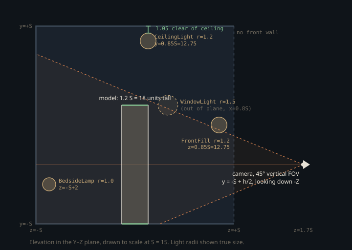

Monograph · Tree · ← Sitemap · Scene framer
camera
Scene framer
Auto-frame bounds for turntable/model viewer.
Fitting the model to the room, not the room to the model
An asset arrives with no unit convention: a scanned head is 180 millimetres tall, a CAD part 0.4 metres, a game character 1.8, and the vertex data declares none of it. Everything downstream that is tuned in absolute world units breaks under that variance, and in a path tracer almost everything is — inverse-square falloff, shadow-ray epsilons, sphere-light radii.
`SceneFramer` inverts the usual framing problem. It does not move a camera until the model fits; it fixes a room of half-size 15 world units — unconditionally, despite a call-site comment claiming the room adapts — and rescales the model into it:
float S = 15.0f;ohao/render/camera/scene_framer.cpp:36result.modelScale = (S * 1.2f) / std::max(maxExtent, 0.001f);ohao/render/camera/scene_framer.cpp:41The divisor is the *largest* of the three AABB extents, not the height, so a chess board or a crouching figure is bounded by its widest axis instead of overflowing sideways. The result: whatever came in, its longest dimension leaves as 18 units — 60% of the room's 30-unit span.
The alternative is to keep the model at native scale and move the camera and lights out to meet it. That fails on the light rig: the four studio lights below carry intensities in the 150–800 range chosen for distances of order S, and irradiance falls as 1/d². Re-fitting a millimetre asset would need every intensity rescaled by d² and every sphere radius shrunk too — a 1.2-unit lamp near a 0.18-unit model is a lamp the model stands inside. Normalising the geometry is one multiply; normalising the lighting model is a per-asset tuning session. The cost is that the framer owns the model transform: nothing can render an asset at its authored scale through this path.
Guessing which way is up from a bounding box
Nothing in a raw vertex buffer says which axis is up, so the framer infers it from the box's aspect: if the Y extent is at least the Z extent, treat the model as Y-up.
bool isYUp = forceYUp || (extent.y >= extent.z);ohao/render/camera/scene_framer.cpp:28Y-up models get the identity rotation. Z-up models get ±90° about X, and the sign is decided by a second inference — whether the model's Z range reaches above zero:
posZIsUp = (bmax.z > 0.01f);ohao/render/camera/scene_framer.cpp:57A DCC export whose Z span is entirely negative has its head at negative Z, so it needs +90° — which maps z → −y, lifting −Z to +Y — rather than the −90° a standard +Z-up model needs. The two Z-up branches mirror each other exactly, because the rotations do: −90° about X sends (x, y, z) to (x, z, −y), so the feet come from `bmin.z` and the depth re-centring term is `+center.y * scale`; +90° sends it to (x, −z, y), so the feet come from `bmax.z` and the same term is negated.
result.modelPosition = {-center.x * scale, -S + feetOffset, center.y * scale};ohao/render/camera/scene_framer.cpp:63result.modelPosition = {-center.x * scale, -S + feetOffset, -center.y * scale};ohao/render/camera/scene_framer.cpp:67All three branches land the model identically — feet on the floor at y = −S, AABB centre on x = 0 and z = 0 — which is the invariant the camera solve leans on.
The heuristic's failure mode is exact and easy to hit: a Y-up model that is deeper than it is tall — a car, a ground plane, a sofa — reads as Z-up and gets tipped onto its face. The header declares an escape hatch for the one format where the answer is known a priori, since the glTF specification mandates Y-up:
bool forceYUp = false);ohao/render/camera/scene_framer.hpp:45No caller in the tree passes it. Both call sites use the default, and `env_demo` re-implements the same `extent.y >= extent.z` test inline without any override at all. The parameter is dead; the heuristic it guards is not.
The camera solve has one free number
Exactly one quantity in the camera solve is derived from the model: its mid-height. The rest of `cameraPosition` is literal — x = 0, z = 1.7 room half-sizes — as are the 45° FOV and both rotation angles.
float modelHeight = isYUp ? extent.y : extent.z;ohao/render/camera/scene_framer.cpp:31result.cameraPosition = {0, modelCenterY, S * 1.7f};ohao/render/camera/scene_framer.cpp:75`modelHeight` is the extent along the *up* axis, so after the rotation above it is the world-space height, and the camera sits half of it above the floor at y = −S — exactly where the model's own AABB centre landed. The fixed orientation is therefore not a shortcut with a failure mode but the look-at solution written out: `setRotation(0, −90)` points down −Z, and every model's centre is already on x = 0, z = 0 at the camera's own height, so that axis passes through it whatever came in.
camera.setRotation(0.0f, -90.0f);ohao/render/camera/scene_framer.cpp:118The 45° FOV is vertical, since it reaches the projection through `glm::perspective`, whose first argument is a vertical field of view:
projectionMatrix = glm::perspective(glm::radians(fov), aspectRatio, nearPlane, farPlane);ohao/render/camera/camera.cpp:44That makes the resulting frame fill computable in closed form. With $h$ the model's world-space height after scaling, $d$ the camera-to-model distance and $\theta$ the vertical FOV, the fraction of frame height the model covers is
The room half-size $S$ cancels — the framing is scale-free, and the only thing the value 15 actually decides is the unit system in which the light rig is tuned. Two assumptions are buried in that 0.85: that the model's longest axis is its up axis, so $h = 1.2\,S$; and that its silhouette is planar at the model centre, so $d = 1.7\,S$ across all of it. A model as deep as it is tall breaks the second — 18 units of depth centred on z = 0 puts the near face at $d = 16.5$, where 18 units of height subtend $18/(2 \cdot 16.5 \tan 22.5^\circ) \approx 1.32$ of the frame and overflow it. The framer normalises the largest extent, not the projected one.
The 1.7 also puts the camera at z = 25.5, *outside* the room's z = +S = 15 wall. `model_viewer` accommodates that by not building a front wall at all:
// No front wall — camera renders from outside looking inexamples/model_viewer.cpp:165`interactive` does not. Its indoor path builds a sealed box, front wall included, and then seeds its camera straight from `frame.cameraPosition`, so that wall starts out between the camera and the model:
addQuad("Front", {S+E,-S-E,S},{-S-E,-S-E,S},{-S-E,S+E,S},{S+E,S+E,S}, {0,0,-1}, wallColor, 0.9f);examples/interactive.cpp:281g_cam.position = frame.cameraPosition;examples/interactive.cpp:207`applyCamera` has exactly one caller, `model_viewer`. `interactive` skips it and builds its own look-at, from the camera position toward `modelPosition` — the model's transform origin, not its AABB centre. The yaw comes out at the same −90°, since both points sit on x = 0; the pitch does not, unless the asset's local origin happens to lie at its own mid-height.
g_cam.yaw = glm::degrees(std::atan2(look.z, look.x));examples/interactive.cpp:213
Why three of the four light radii are argued for
The four-light studio rig is emitted as sphere lights with radii of 1.2, 1.5, 1.0 and 1.2. Three of the four carry a comment doing the arithmetic against the wall they face — a 1.2-radius sphere at y = 0.85 S sits at 12.75 with its top at 13.95, clear of the ceiling at 15.
{"CeilingLight", {0.0f, S * 0.85f, 2.0f}, {1.0f, 0.92f, 0.82f}, 800.0f, 1.2f},ohao/render/camera/scene_framer.cpp:89The fourth is asserted rather than derived. `BedsideLamp` gets no arithmetic and names no wall — only a parenthetical that it is already interior:
// Bedside lamp — warm point light on the nightstand (already interior).ohao/render/camera/scene_framer.cpp:93It does clear the walls, and it fails on the furniture. Both callers build the same nightstand, its top face at $y = -S + 1.5 \cdot 0.25\,S = -9.375$ over $z \in [-15,-12]$; the lamp sits at $y = -S + 6 = -9$ with radius 1.0, so the sphere's lower cap is 0.625 units inside the solid it is meant to light — the exact configuration the other three comments exist to rule out.
addBox("Nightstand", {nsX, -S, -S}, {nsX + 3.0f, -S + bedH * 1.5f, -S + 3.0f}, nsColor, 0.45f);examples/model_viewer.cpp:187Those radii travel intact: the light component's radius becomes the RT light record's `dirAndParam.w`, which the raygen reads as the sphere radius.
float dirParam = lc->getRadius();ohao/gpu/vulkan/light_upload.cpp:165The reason the clearances matter is visible in the next-event estimator — and *which* estimator depends on the profile. `RenderMode::RTOffline` selects `RTOfflineRenderer`, whose `PathTracer` is constructed with the offline raygen SPV, so the shader below is `pt_raygen_offline.rgen`; the `pt_raygen.rgen` named as the `PathTracerShaderSet` default is overridden by both profile renderers and never dispatched.
"bin/shaders/rt_pt_raygen_offline.rgen.spv",ohao/render/rt/rt_profile_renderer.hpp:220For a sphere light that raygen samples a point uniformly on the surface, converts the uniform-area pdf to solid angle in a term it calls `weight`, and multiplies by the emitted radiance `Le`. The block occurs three times, once per path stage — bounce 0, then once inside each of the Stage-B specular and Stage-C diffuse bounce loops — and it computes:
Here $I$ is the authored intensity, $c$ the colour, $r$ the sphere radius, $\theta_\ell$ the angle at the sampled point between its outward normal and the direction back to the shading point, and $d$ the distance between them. The two $4\pi r^2$ factors cancel exactly — which is the fact the framer's comment relies on. Brightness is radius-independent, so a radius can be shrunk to clear a wall without changing exposure; only shadow and highlight sharpness change. Averaged over uniform samples on the whole sphere $\mathbb{E}[\max(\cos\theta_\ell,0)] = 1/4$, so a distant receiver sees irradiance $I/(4d^2)$.
What does not cancel is $1/d^2$. `weight` divides by the squared distance to the *sampled point* with no epsilon floor, and the bounce-0 shading line folds it in along with a light-count factor that undoes the uniform light pick:
vec3 directContribution = Le * (diff * nlDiff + spec * NdotL) * weight * float(lightBuf.lightCount);shaders/rt/pt_raygen_offline.rgen:481The diffuse half of that line is scaled by `nlDiff` — a per-channel, subsurface-wrapped replacement for the scalar `NdotL` the specular half still uses. The header comment claiming this file is a verbatim copy of `pt_raygen.rgen` is stale; the two have diverged at exactly this line.
// Currently a verbatim copy of pt_raygen.rgen (kept as a separate entry point soshaders/rt/pt_raygen_offline.rgen:8If a light sphere pokes through a wall, the wall texels inside it draw samples at $d \to 0$ and the contribution diverges. The offline profile has no clamp to catch it: `kOfflineRTSettings` leaves `enableFireflyClamp` false, so the push-constant flag is never set and the luminance-clamp branch guarding every one of those shading lines is compiled in but never entered.
.enableFireflyClamp = false,ohao/render/rt/rt_settings.hpp:57The light radii are geometry, not aesthetics. With the clamp off on the offline profile, the only defence against an unbounded NEE sample is keeping every light sphere strictly inside the surfaces it can illuminate — and *which* surfaces those are is per-caller: ceiling, floor and side walls exist in both, the z = +S wall only in `interactive`. Moving a light "a bit closer to the ceiling" is a rendering bug, not a lighting tweak.
Contracts
- Light positions are not multiples of `S`. `CeilingLight` carries an absolute z = 2, `WindowLight` an absolute y = 3 and z = 5, and `BedsideLamp` is affine throughout (`S*0.55`, `-S + 6`, `-S + 2`). Only the single wall-facing coordinate of the three commented lights — `S*0.85`, `S*0.8`, `S*0.85` — is a plain multiple, and all four radii are absolute constants. So the clearances hold only while `0.85 S + 1.2 < S`, i.e. `S > 8`; shrinking the room without shrinking the radii pushes `CeilingLight` through the ceiling in both callers and `FrontFill` through the z = +S wall in `interactive`, the only caller that builds that wall.
- `cameraPosition` is outside the room: z = 1.7 S = 25.5 against walls at ±S. A caller must either omit the +Z wall, as `model_viewer` does, or move the camera. `interactive` does neither on its indoor path.
- Callers must apply all three of `modelScale`, `modelRotation` and `modelPosition`. Scale without rotation lays Z-up assets on their side; skipping position leaves them floating instead of standing on the floor.
- `FrameResult::valid()` only checks that three scalars are positive, has no callers, and returns true for degenerate input: a model that loads with zero vertices leaves the AABB at its ±FLT_MAX sentinels, giving a scale of 18000 and a non-finite position.
- Only `model_viewer` and `interactive` call this. `turntable`, `cornell_box` and `env_demo` do not — `env_demo` carries its own inlined copy of the up-axis test with a different target size, so a fix here does not reach it.
- On the failure path there are no lights at all. A hand-built `FrameResult` leaves the `lights` vector empty and `applyLights` silently adds nothing.
Source files
ohao/render/camera/scene_framer.cppohao/render/camera/scene_framer.hppohao/render/camera/camera.cppexamples/model_viewer.cppexamples/interactive.cppohao/gpu/vulkan/light_upload.cppohao/render/rt/rt_profile_renderer.hppshaders/rt/pt_raygen_offline.rgenohao/render/rt/rt_settings.hppParent hub for the full pipeline narrative; this page is the file-level design unit. Sitemap · hover glossary terms anywhere.